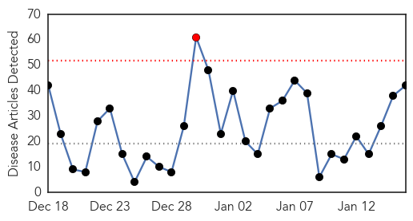
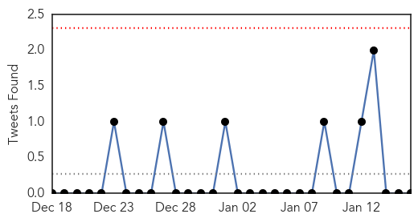
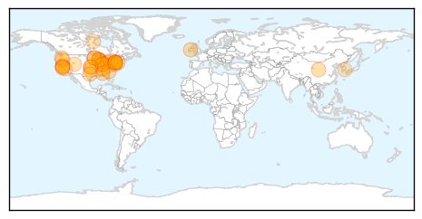

Toggle navigation
Early Warning
Daily Alerts
Influenza
Jan 16, 2015
Compare to:
-
Dengue Fever
Hemmorhagic Fever
Mold/Fungal Infection
Meningitis
Pertussis / Whooping Cough
Middle East Respiratory Syndrome
Cholera
Hepatitis
Chikungunya
Yellow Fever
Bubonic Plague
West Nile Virus
Swine Flu
Ebola
Measles
Unknown
Mumps
30 Day Trends
Web: 1
alerts
, 0
warnings
Twitter: 0
alerts
, 0
warnings
Top Articles:
1.000
Oklahoma Flu Deaths Rise By Nine
0.999
Officials: 85 deaths this flu season, higher than 10-year total
0.999
Flu vaccine being developed for all influenza types
0.998
State health officials advise getting flu shot
0.998
Flu Season Hitting Napa, Bay Area
0.998
Napa is approaching height of flu season
0.997
Protect yourself from the flu
0.997
19 more children die as flu season takes toll
0.997
Update: DPH: Flu Deaths Rise to 16 in Delaware
0.997
Flu shot 23 percent effective this season
0.996
Two Flu-Related Deaths Reported At Children’s Mercy Hospital
0.994
Flu vaccine not working well; only 23 percent effective
0.993
Untitled Article
0.993
Eight flu-related deaths reported in St. Joseph County as offici
0.993
As flu season gets underway, US health authorities caution that flu shot is only 23 percent effective
0.993
Flu Threat Expected to Continue
0.992
Flu surge detected in Toronto
0.986
Commentary: Fight flu by staying home
0.986
Flu Shots Ineffective, Over 75 Percent Of Vaccines Will Not Work Due To Viral Mutations
0.984
Flu Cases Up in NYC Amid Reports of Ineffective Vaccine
0.984
Bay Area Sees Spike In Flu Cases, 4 Deaths Reported « CBS San Francisco
0.983
Cracking the vaccine conundrum
0.981
Flu shot effectiveness is lower while number of Hoosiers dying from flu increases
0.979
Fighting Flu: When You Should Go to the Hospital
0.978
Changing flu strain swarms the nation and relief can’t come fast enough
0.970
Santa Cruz County fighting off flu; shots available
0.968
CDC: This year's flu vaccine provides only minimal protection fr
0.967
In Minnesota, number of flu cases suggests season has peaked
0.964
Employee Influenza Vaccination Clinic at BU Occupational Health Center
0.952
Bird flu in Oregon poses no danger to humans, but backyard chickens beware
0.950
More than three-quarters of this year's flu shots were ineffective
0.950
CDC: Flu vaccine only 23 percent effective
0.948
26-year-old newlywed dies from flu, sepsis complications
0.945
Mac researchers may have found a way to outsmart the flu virus
0.943
Organizations team up to fight the spread of flu at Sundance Film Festival
0.931
Flu vaccine this season one of least effective in years, CDC says
0.910
Wisconsin newlywed dies less than week after contracting flu
0.871
Fighting the flu on northern reserves
0.793
South Korea to Impose Poultry Movement Ban
0.705
Eastern Iowa Breaking News, Weather, Closings
0.700
WCCT Global collaborates with NIAID for Influenza Challenge Research
0.598
Three snowmobiles, equipment stolen from Perry home
Top Tweets:
No tweets found for Jan 16, 2015
Web/News Articles

Tweets

Article Locations

Article Confidences